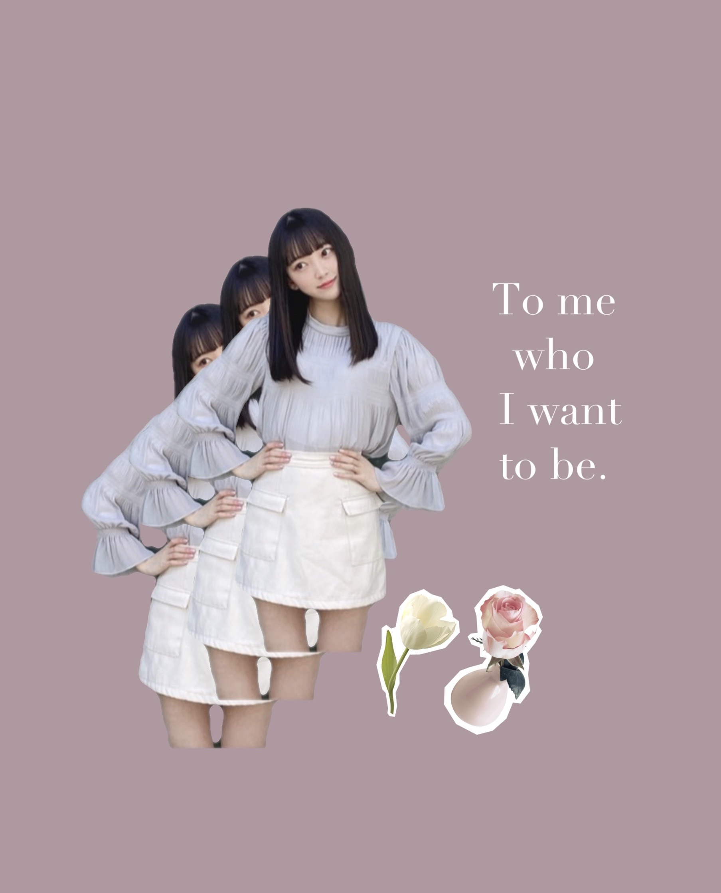
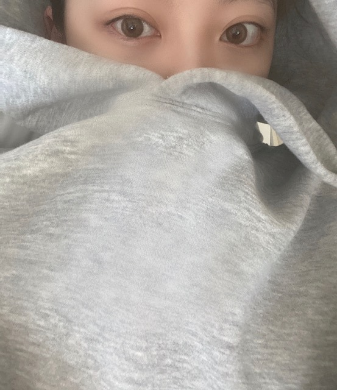
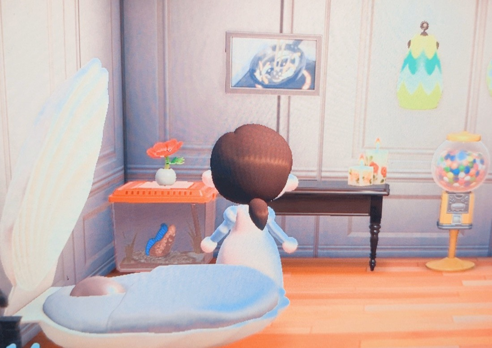

2020/0414Tue@horimiona2nd
5月27日（水）発売の
堀未央奈2nd写真集の
各書店特典ポストカードが公開されました！
各特典ポストカードの絵柄は
私が厳選しました〜
限定ですので御予約はお早めに...☺︎
✿未来屋書店
✿HMV
✿TSUTAYA
✿タワーレコード
✿楽天ブックス
✿丸善・ジュンク堂
✿紀伊国屋書店
✿コーチャンフォー
✿くまざわ書店
9パターン！
詳しくは
@horimiona2nd
@horimiona_2nd
まで☺︎

待ち受けとかアイコンに
よかったら使ってください✼

すっぴんでパーカー着てごろごろ。
どうぶつの森して映画やアニメ観て...
たまに漫画読んで...
今日はゲットアウト
ピンクとグレー
を観ました
アニメも見始めました
漫画は "たまのごほうび"
を読み終えて
"君がトクベツ"は読み途中です
たまのごほうびの玉緒くん
ちょっぴり不思議でまっすぐで
優しくてかなりエモいです...
かわいいとかっこいいが共存してます...
なんでも素直に言うところが素敵です...
好きなシーンは
玉緒くんが猫の真似をするところと
花火大会に私服で来ちゃうところと
俺のこと好きなの？と聞いちゃうところと
好きなおやつは？って聞かれて「ちゅ〜る」
って言っちゃうお茶目なところ
あーもう全部です！エモいです！

ちなみにハチに刺されて目が腫れちゃいました
うぅ...
(あつ森のはなし)
あ、くすみピンクのワンピース自分で
デザインしました✼
お気に入りです
すっぴんばっかりでごめんなさい。
ジェラートピケのタオル生地のパジャマ
着心地良くてお気に入りです☺︎
でははは
2020/04/14 14:24
コメント(268)
こんばんは♡
ポストカード全部魅力的です✨
9パターンもあって嬉しいです！
もちろん全部欲しくなりました✌
コラージュもとてもお洒落です！
ロングヘアもう懐かしいですね☆
すっぴん写真も可愛いらしいです！
お家で感性も磨いてて素敵ですよ✴
あつ森も気分転換に最適ですよねー！
タオル生地でもリフレッシュですね♪
爽やかな姿に気分爽快になりました♡☺
ポストカード全部魅力的です✨
9パターンもあって嬉しいです！
もちろん全部欲しくなりました✌
コラージュもとてもお洒落です！
ロングヘアもう懐かしいですね☆
すっぴん写真も可愛いらしいです！
お家で感性も磨いてて素敵ですよ✴
あつ森も気分転換に最適ですよねー！
タオル生地でもリフレッシュですね♪
爽やかな姿に気分爽快になりました♡☺
可愛い❤️
すっぴんとは思えない！
すっぴんとは思えない！
みおたんきゃわたん♡♡♡
写真集発売日って俺の誕生日じゃねぇか
写真集買おっかなー
かわいい！
未央奈〜
ポストカードどれも可愛くて超好みだった！
今までCDとかも予約したことなかったけどしてみようかな！
今はほぼ乃木坂しか楽しみがないよ〜泣
それも少なくなってるしね。
だからとりあえず今は未央奈の写真集発売が1番の楽しみです！
楽しみすぎて5/27が来て欲しいような来て欲しくないような、、
それとすっぴん可愛すぎる！お休み中はやっぱお肌休ませるよね〜私は逆にお休みだけど未央奈参考にしてメイクの練習しようかなって思ってます！けどあんま化粧品持ってないし買いにも行けないから練習にならんかも笑
ポストカードどれも可愛くて超好みだった！
今までCDとかも予約したことなかったけどしてみようかな！
今はほぼ乃木坂しか楽しみがないよ〜泣
それも少なくなってるしね。
だからとりあえず今は未央奈の写真集発売が1番の楽しみです！
楽しみすぎて5/27が来て欲しいような来て欲しくないような、、
それとすっぴん可愛すぎる！お休み中はやっぱお肌休ませるよね〜私は逆にお休みだけど未央奈参考にしてメイクの練習しようかなって思ってます！けどあんま化粧品持ってないし買いにも行けないから練習にならんかも笑
未央奈さんブログ更新ありがとう。未央奈さんすっぴん可愛い❤️です。何時も忙しいのにモバメもらってますどうもありがとう。こんなに可愛い❤️子の写真集買うの楽しみにしてます。家は横須賀市だから特典は貰えないな、けど人生で初めての写真集買うのは未央奈さんです。何時も癒されてる。お家時間楽しみましょう。コロナ終息する迄我慢するね。
未央奈ブログ更新ありがとう！
写真集楽しみすぎます〜！握手会とかも無くなってもう生き甲斐です！！写真集は！！表紙がどんなのか気になりすぎます！！
たまのごほうびいいですよね！！あの不思議な感じに惹かれるのすごいわかります！君はトクベツも読んだことがあるので感想聞きたいです！
あと待ち受けちょうど何にしようか迷っていたのでありがたいです！！
写真集楽しみすぎます〜！握手会とかも無くなってもう生き甲斐です！！写真集は！！表紙がどんなのか気になりすぎます！！
たまのごほうびいいですよね！！あの不思議な感じに惹かれるのすごいわかります！君はトクベツも読んだことがあるので感想聞きたいです！
あと待ち受けちょうど何にしようか迷っていたのでありがたいです！！
お疲れ様なのです└(ﾟ∀ﾟ└) (┘ﾟ∀ﾟ)┘
素っぴんが綺麗って最強じゃん！
ジェラピケのルームウェアを最近、彼女に買って渡した！
男一人で入るの精神的に辛かった～(笑)
素っぴんが綺麗って最強じゃん！
ジェラピケのルームウェアを最近、彼女に買って渡した！
男一人で入るの精神的に辛かった～(笑)
ブログ更新ありがとう！
加工画像めちゃめちゃかわいい！
写真集絶対買う！
だいすき！
加工画像めちゃめちゃかわいい！
写真集絶対買う！
だいすき！
堀未央奈❤こんばんは❗写真集のポストカード決まったんだね(^_^)v良かったね(^o^)v未央奈が絵柄決めたんだね(^_^)v早く見てみたいな(*^^*)俺は、長野県上田のTSUTAYAで写真集予約してあるからね(^_^)v今日は、漫画観たりアニメ観たりゲームして過ごしていたんだね(^o^)v家に居る時はゆっくりしてね(^_^)vスッピンでも可愛いね(*^_^*)ゲーム服の色自分で決められるんだね(^_^)v俺もこの色好きだよ(*^O^*)今日も可愛いね(*^_^*)大好きだよ(*^O^*)
すっぴんでも十分綺麗だね～(^-^)
未央奈ブログ更新ありがとう！
特典ポストカードの未央奈めちゃくちゃ可愛いね。さすが未央奈が選んだだけあるね。全部揃えたいな。
コラージュオシャレ！このミニスカート未央奈っぽいよね。
すっぴんも可愛い！
少女漫画よく知らないけど未央奈が言うとどんなのか気になっちゃうなあ。
可愛すぎるすっぴんにパジャマってお家感にドキドキ。
改めて未央奈大好き。
では！
特典ポストカードの未央奈めちゃくちゃ可愛いね。さすが未央奈が選んだだけあるね。全部揃えたいな。
コラージュオシャレ！このミニスカート未央奈っぽいよね。
すっぴんも可愛い！
少女漫画よく知らないけど未央奈が言うとどんなのか気になっちゃうなあ。
可愛すぎるすっぴんにパジャマってお家感にドキドキ。
改めて未央奈大好き。
では！
ブログ更新ありがとう!!
かわいいー!!
すっぴんとは思えない
かわいいー!!
すっぴんとは思えない
未央奈さん、こんばんは
ポストカード見ましたよ～
笑顔が素敵ですね
全部欲しいなぁ(^_^)
あつ森
蜂に刺されたお顔が気になる。。。
大丈夫？
すっぴんの写真ありがとう
決めポーズ可愛らしいです
後ろ姿の髪型
どうなってるんだろf(^_^)
乃木坂工事中、観ましたよ～
アナスターシャ
何回聴いてもいい曲だなぁ
いつも更新
ありがとうございます！
ポストカード見ましたよ～
笑顔が素敵ですね
全部欲しいなぁ(^_^)
あつ森
蜂に刺されたお顔が気になる。。。
大丈夫？
すっぴんの写真ありがとう
決めポーズ可愛らしいです
後ろ姿の髪型
どうなってるんだろf(^_^)
乃木坂工事中、観ましたよ～
アナスターシャ
何回聴いてもいい曲だなぁ
いつも更新
ありがとうございます！
たまのごほうび私も読んでる
玉緒くんのにゃ〜が可愛かったあ
テリトリーＭの住人めっちゃ面白いから読んでみて♪
玉緒くんのにゃ〜が可愛かったあ
テリトリーＭの住人めっちゃ面白いから読んでみて♪
具現化されていきますね～
どれも捨てがたい！
分身の術！
楽出来る日はのんびりでいきましょう。
日曜日みたいなのとかもね。
集団で日曜休みとかいつぶりですか？
っていうかあるんですかね（笑）
ハチね～
強敵だよね
意地でも虫取り網で捕まえようとしてたWii時代（笑）
獲れるのかは知りません（笑）
衣類のデザイン！
現実でも役立ちそうな。
たおる！
どれも捨てがたい！
分身の術！
楽出来る日はのんびりでいきましょう。
日曜日みたいなのとかもね。
集団で日曜休みとかいつぶりですか？
っていうかあるんですかね（笑）
ハチね～
強敵だよね
意地でも虫取り網で捕まえようとしてたWii時代（笑）
獲れるのかは知りません（笑）
衣類のデザイン！
現実でも役立ちそうな。
たおる！
着心地良さそうだね～。リラックス～＾＾
みおな、こんばんは！更新ありがとう。 近況報告ありがとうございます。 すっぴんも大好きです。 では、毎日みおなに良いこと沢山ありますように！ おやすみおな！！
スッピン綺麗ね 写真集楽しみ(^^)
写真集楽しみ(^^)
お疲れ様です、堀さん。
このブログで紹介されている、ポストカードでしょうか、オシャレですね
シンプルでオシャレで個人的には好きですね
そしてなんといってもね、堀さんがかわいいです！
どうぶつの森、僕はあまり詳しくないのですけど、なんだか本当に今すごい人気みたいですね
そうですね、堀さんのブログ読んでてもね、同期からお金もらったり、蜂に刺されたり、なんだかおもしろいなと感じますね（笑）
堀さんのすっぴん、とてもかわいいと思います
それでは、楽しい時間をお過ごしください、健康にはお気をつけてお過ごしください！
このブログで紹介されている、ポストカードでしょうか、オシャレですね
シンプルでオシャレで個人的には好きですね
そしてなんといってもね、堀さんがかわいいです！
どうぶつの森、僕はあまり詳しくないのですけど、なんだか本当に今すごい人気みたいですね
そうですね、堀さんのブログ読んでてもね、同期からお金もらったり、蜂に刺されたり、なんだかおもしろいなと感じますね（笑）
堀さんのすっぴん、とてもかわいいと思います
それでは、楽しい時間をお過ごしください、健康にはお気をつけてお過ごしください！
YouTubeは見ますか？また、好きなYouTuberは誰ですか？
未央奈！
ほんとすっぴんでも綺麗とか惚れちゃうやろw
大好きです！
体調管理は本当に気をつけてね。心配だから。
どう森して寝ましょう。
ではは
ほんとすっぴんでも綺麗とか惚れちゃうやろw
大好きです！
体調管理は本当に気をつけてね。心配だから。
どう森して寝ましょう。
ではは
ブログ更新ありがとう！
写真集の特典ポストカードの情報解禁されたね～
絶対買わないと
これまた美脚な未央奈ちゃん！
ちゅ～るって猫のエサの名前じゃない笑
発音が似てるんだもん
写真集の特典ポストカードの情報解禁されたね～
絶対買わないと
これまた美脚な未央奈ちゃん！
ちゅ～るって猫のエサの名前じゃない笑
発音が似てるんだもん
いつも更新ありがとう
なんでそんなに可愛いの⁉️
目が素敵❤️
なんでそんなに可愛いの⁉️
目が素敵❤️
今日もブログ更新ありがとう。
写真集の情報少しづつ出てきたね
ポストカードなるべく揃えるよ〜
ラフな感じの堀ちゃんいいね、
スッピン嘘でしょ？（笑）
可愛すぎます。
ゲームに映画に漫画にアニメ楽しんでね〜
でははは〜
写真集の情報少しづつ出てきたね
ポストカードなるべく揃えるよ〜
ラフな感じの堀ちゃんいいね、
スッピン嘘でしょ？（笑）
可愛すぎます。
ゲームに映画に漫画にアニメ楽しんでね〜
でははは〜
未央奈～ こんにちは
連日のブログ更新ありがとうございます。
２ｎｄ写真集の詳細発表おめでとうございます。
予約完了、あとは発売日を楽しみにしています。
それにしても、このところのブログ・７５５の更新ぶりにはホント頭が下がります。その上いつもたくさんの写真、癒されています。しかも、すっぴん、「ごめんなさい」なんて、そんな言葉は不要ですよ。
季節の変わり目、寒暖の気温差が激しいので、体調管理には気をつけてくださいね。
連日のブログ更新ありがとうございます。
２ｎｄ写真集の詳細発表おめでとうございます。
予約完了、あとは発売日を楽しみにしています。
それにしても、このところのブログ・７５５の更新ぶりにはホント頭が下がります。その上いつもたくさんの写真、癒されています。しかも、すっぴん、「ごめんなさい」なんて、そんな言葉は不要ですよ。
季節の変わり目、寒暖の気温差が激しいので、体調管理には気をつけてくださいね。
みおな
こんばんは！
今日も更新ありがとうございます
こんな状況でも、仕事は忙しいから最近はみおなのブログに助けられてます（下手したら最近の唯一の楽しみかも笑）
2nd写真集すごく楽しみです
お渡し会はできないと見てるから、バッチリ予約は済ませてます
すごい先になって、やる時があるなら楽しみだけどね
モバイルで予約したけど、TSUTAYAも予約しようかな
スッピン可愛いです
メイクはもはや必要ない完成度です
どう森は順調ですね
桃子も、やってるみたいなので一緒にやってみたら？
あ！そうそう最後に一つ
蜂が出た時は、円を描くように走りながら、建物の中に逃げると刺されずに逃げられるよ！（人の家は留守の時があるから注意）
ほな！
ありがとうございました（明日もきっと待ってる）
こんばんは！
今日も更新ありがとうございます
こんな状況でも、仕事は忙しいから最近はみおなのブログに助けられてます（下手したら最近の唯一の楽しみかも笑）
2nd写真集すごく楽しみです
お渡し会はできないと見てるから、バッチリ予約は済ませてます
すごい先になって、やる時があるなら楽しみだけどね
モバイルで予約したけど、TSUTAYAも予約しようかな
スッピン可愛いです
メイクはもはや必要ない完成度です
どう森は順調ですね
桃子も、やってるみたいなので一緒にやってみたら？
あ！そうそう最後に一つ
蜂が出た時は、円を描くように走りながら、建物の中に逃げると刺されずに逃げられるよ！（人の家は留守の時があるから注意）
ほな！
ありがとうございました（明日もきっと待ってる）
未央奈さん、ブログ更新ありがとう。どこにでもいるおっさんです。
すっぴん。超絶かわいい。
写真集、待ち遠しいな。
こんな時期だけど、毎日仕事が忙しくて。
未央奈さんのブログとモバメに癒されてます。
堀様軍団。落ち着いたら、また見たいなー。
岐阜が生んだ可憐な美少女さん。おうち時間、楽しんでね。
ひでき
すっぴん。超絶かわいい。
写真集、待ち遠しいな。
こんな時期だけど、毎日仕事が忙しくて。
未央奈さんのブログとモバメに癒されてます。
堀様軍団。落ち着いたら、また見たいなー。
岐阜が生んだ可憐な美少女さん。おうち時間、楽しんでね。
ひでき
未央奈ブログ更新ありがとう！
コラージュの画像待ち受けにする！
すっぴんでも全然分かんないくらいキレイ！
次いつ会えるか分かんないけど、その日を楽しみにこれから頑張る！
未央奈もガンバレ！応援してるよ！
体調には本当に気をつけてね！
by未央奈推しのブラックコーヒー
コラージュの画像待ち受けにする！
すっぴんでも全然分かんないくらいキレイ！
次いつ会えるか分かんないけど、その日を楽しみにこれから頑張る！
未央奈もガンバレ！応援してるよ！
体調には本当に気をつけてね！
by未央奈推しのブラックコーヒー
可愛いすぎる！
すっぴん超～可愛い～
いつもブログ更新してくれてありがとう！
未央奈ちゃんはすっぴんも可愛いね！
部屋着なのがまた癒されます。
写真集の発売日が楽しみです！
体調には気をつけてくださいね！
未央奈ちゃんはすっぴんも可愛いね！
部屋着なのがまた癒されます。
写真集の発売日が楽しみです！
体調には気をつけてくださいね！
わーい！
2nd写真集のポストカード解禁〜
厳選。さすがのナイスチョイス。
9パターン！どれもいいー！
めっちゃ良い言葉だね。(^-^)
なりたい自分に。
(分身の術で笑ったのは黙っておこう。
すっぴんもかわいいのぅ。
オードリーヘップバーンの英語の本は読み進めてる〜？こっちも見習って英語の本読もうかなと思った今日この頃。
聞いてるだけで玉緒くんのクオリティの高さがうかがえる！ふぅ〜
良い世界観の部屋だね✨
みおちゃんの好きそうなのが詰まってる♪
料理の写真？もよきよき。
真珠を殻ごと飾る人もなかなか見たことないけど、もしかしてその中で寝る系の人魚さん？
びっくりするわ！
ハチに刺されたなんていうから。
くすみピンクのワンピースおしゃれ〜♪
昨日見せてくれた服装も良きだったよーん。
きれい！すっぴんなの！
肌触りすごい良さそうなパジャマだね〜
いいなぁ。
大量に音楽を聴く日々だけど、その中でもやっぱり乃木坂の曲って良い曲ばっかりだねっ！
ファンだからかもしれないけど。笑
もっともっとみおちゃんの曲が増えるのを期待してます。
では！✌️
2nd写真集のポストカード解禁〜
厳選。さすがのナイスチョイス。
9パターン！どれもいいー！
めっちゃ良い言葉だね。(^-^)
なりたい自分に。
(分身の術で笑ったのは黙っておこう。
すっぴんもかわいいのぅ。
オードリーヘップバーンの英語の本は読み進めてる〜？こっちも見習って英語の本読もうかなと思った今日この頃。
聞いてるだけで玉緒くんのクオリティの高さがうかがえる！ふぅ〜
良い世界観の部屋だね✨
みおちゃんの好きそうなのが詰まってる♪
料理の写真？もよきよき。
真珠を殻ごと飾る人もなかなか見たことないけど、もしかしてその中で寝る系の人魚さん？
びっくりするわ！
ハチに刺されたなんていうから。
くすみピンクのワンピースおしゃれ〜♪
昨日見せてくれた服装も良きだったよーん。
きれい！すっぴんなの！
肌触りすごい良さそうなパジャマだね〜
いいなぁ。
大量に音楽を聴く日々だけど、その中でもやっぱり乃木坂の曲って良い曲ばっかりだねっ！
ファンだからかもしれないけど。笑
もっともっとみおちゃんの曲が増えるのを期待してます。
では！✌️
えぐかわいい
未央奈さん、かわいいのは もちろんですが、楚々とした色気も とっても良いです。
お顔も、いろいろな髪型も、声も、スタイルも、美脚も、パフォーマンスも、その他ｅｔｃ．… すべてが大好きです。
宇宙一、大好きです!!。
お顔も、いろいろな髪型も、声も、スタイルも、美脚も、パフォーマンスも、その他ｅｔｃ．… すべてが大好きです。
宇宙一、大好きです!!。
屋根とワンピースの堀さんが一番美しいです。
すっぴんもかわいい！！
『ロミオとジュリエット』での有名なセリフ、
「私たちがバラと呼ぶものは、他のどんな◆名前◆で呼んでも、
同じように甘く香るわ」は、
英語ではどんな表現でしょうか？
That which we call a rose by any other name would smell as sweet.
「私たちがバラと呼ぶものは、他のどんな◆名前◆で呼んでも、
同じように甘く香るわ」は、
英語ではどんな表現でしょうか？
That which we call a rose by any other name would smell as sweet.
堀さん、こんばんは。
ポストカードの絵柄見ました。どの堀さんも白くて細くて綺麗でした。
コラージュ画像は、なりたい自分になるために自身を更新し続けてるみたいな感じでしょうか。あつ森で服のデザインをしてるのも、モデルとしてお洒落でいる感覚を研ぎ澄ますためなのかと深読みしてしまいました。
ゲットアウトは良いですよね。パンフレットによると現実がひど過ぎてエンディング変えたから、最後パトカー乗ってたのがあれになったそうですよ。
人種差別とか、あとミッドサマーみたいに、慣習を続けるために人を犠牲にする話に落ち込んだときは、netflixにもあるインド映画のパッドマンのことを僕は思い出して、捨てたもんじゃねえよなって思いなおします。
堀さんの好きなマンガのキャラの性格って堀さんのなりたい自分に近いような気がします。堀さんも素直な猫になれたらいいですね。
ポストカードの絵柄見ました。どの堀さんも白くて細くて綺麗でした。
コラージュ画像は、なりたい自分になるために自身を更新し続けてるみたいな感じでしょうか。あつ森で服のデザインをしてるのも、モデルとしてお洒落でいる感覚を研ぎ澄ますためなのかと深読みしてしまいました。
ゲットアウトは良いですよね。パンフレットによると現実がひど過ぎてエンディング変えたから、最後パトカー乗ってたのがあれになったそうですよ。
人種差別とか、あとミッドサマーみたいに、慣習を続けるために人を犠牲にする話に落ち込んだときは、netflixにもあるインド映画のパッドマンのことを僕は思い出して、捨てたもんじゃねえよなって思いなおします。
堀さんの好きなマンガのキャラの性格って堀さんのなりたい自分に近いような気がします。堀さんも素直な猫になれたらいいですね。
みおなはほんと優秀やな〜
ミニスカート♡
綺麗な太もも
写真集楽しみ。
綺麗な太もも
写真集楽しみ。
なぁ～未央奈～ちゅ～るちょうだいっ！
すっぴんの方が綺麗って どういうことなのっ(*^^*)
すっぴんの方が綺麗って どういうことなのっ(*^^*)
未央奈ちゃん、こんにちは
おうち時間、充実してるね〜
あつ森も楽しんでるみたいで良かった
蜂に刺されたら、蜂に刺されたまま島民に話しかけると、お薬レシピゲット出来るよ〜
って知ってるか
映画は、Amazon primeで、ボチボチ楽しんでます
未央奈ちゃんは、Netflixとかかなぁ？？
おうち時間、充実してるね〜
あつ森も楽しんでるみたいで良かった
蜂に刺されたら、蜂に刺されたまま島民に話しかけると、お薬レシピゲット出来るよ〜
って知ってるか
映画は、Amazon primeで、ボチボチ楽しんでます
未央奈ちゃんは、Netflixとかかなぁ？
こんばんは。
2nd写真集盛り上がってきましたね。
ポストカード公開で朝からテンション上がりましたよ。
未央奈さんが選んだのでしたら、より欲しくなりますね。
沢山の方々が買って見て欲しいですね。
限定との言葉を追加すれば、より効果的かもしれませんね。
とにかく楽しみすぎです。
待ち受けに使おうかな、ありがとうございます。
用途を考えるだけでも幸せです。
余裕がある時、またその内追加で作ってくれたら嬉しいです。
すっぴんが可愛いですね。
肌も綺麗で見惚れます。
可愛い、愛おしいですよ。
パジャマがオシャレで着心地良さそうですね。
寝るのが楽しそうですね。
可愛いです。
お身体にはお気をつけてくださいね。
またまた更新ありがとうございました。
未央奈さんを感じとれ嬉しいです。
頑張って行きましょう！
2nd写真集盛り上がってきましたね。
ポストカード公開で朝からテンション上がりましたよ。
未央奈さんが選んだのでしたら、より欲しくなりますね。
沢山の方々が買って見て欲しいですね。
限定との言葉を追加すれば、より効果的かもしれませんね。
とにかく楽しみすぎです。
待ち受けに使おうかな、ありがとうございます。
用途を考えるだけでも幸せです。
余裕がある時、またその内追加で作ってくれたら嬉しいです。
すっぴんが可愛いですね。
肌も綺麗で見惚れます。
可愛い、愛おしいですよ。
パジャマがオシャレで着心地良さそうですね。
寝るのが楽しそうですね。
可愛いです。
お身体にはお気をつけてくださいね。
またまた更新ありがとうございました。
未央奈さんを感じとれ嬉しいです。
頑張って行きましょう！
アイコンに使わせていただきます。
未央奈のブログ読んでたらどう森やりたくなってきた
未央奈のブログ読んでたらどう森やりたくなってきた
未央奈～～～～～～～～～。2nd写真集、発売おめでとうございます。先が見えない外に出れない辛さのなかで、乃木坂のブログに救われてます。又、更新お願いしゃーす。
未央奈ちゃん、おはようございます。
すっぴん、メチャカワイイです‼
写真集は予約済みです。
いろいろな情報発信ありがとう、本当に本当に癒されます。
乃木坂46と頑張ってるcuteでsmartな未央奈ちゃんを応援しています。
すっぴん、メチャカワイイです‼
写真集は予約済みです。
いろいろな情報発信ありがとう、本当に本当に癒されます。
乃木坂46と頑張ってるcuteでsmartな未央奈ちゃんを応援しています。
未央奈ちゃん、おはよう。
今、鶯が鳴いてた。
どこにでもある住宅街だけど。
もう、そんな季節になったのか〜
早いなぁ。
鶯も鳴き慣れてないのか、とても
拙い感じで頑張れって応援したよ（笑）
映画をいくつか紹介してくれて
ありがとう。いい暇潰しになります。
僕はあれなんで観れそうなやつを
ピックアップして観たいと思います。
でも、頻繁に755にきてくれるから
勝手に未央奈ちゃんと会話してる
様な気分になって、そっちの方が
最高の暇潰しで癒しの時間です。
冒頭の鶯
ホー、ホケッ、ホケチョ
こんな感じで鳴いてた。
今思い出しても笑えます。
では。
今、鶯が鳴いてた。
どこにでもある住宅街だけど。
もう、そんな季節になったのか〜
早いなぁ。
鶯も鳴き慣れてないのか、とても
拙い感じで頑張れって応援したよ（笑）
映画をいくつか紹介してくれて
ありがとう。いい暇潰しになります。
僕はあれなんで観れそうなやつを
ピックアップして観たいと思います。
でも、頻繁に755にきてくれるから
勝手に未央奈ちゃんと会話してる
様な気分になって、そっちの方が
最高の暇潰しで癒しの時間です。
冒頭の鶯
ホー、ホケッ、ホケチョ
こんな感じで鳴いてた。
今思い出しても笑えます。
では。


写真集もいよいよ発売が近づいてきましたが、まだタイトルが発表されてないんですよね。
気になるなぁ。
早く知りたいです☆